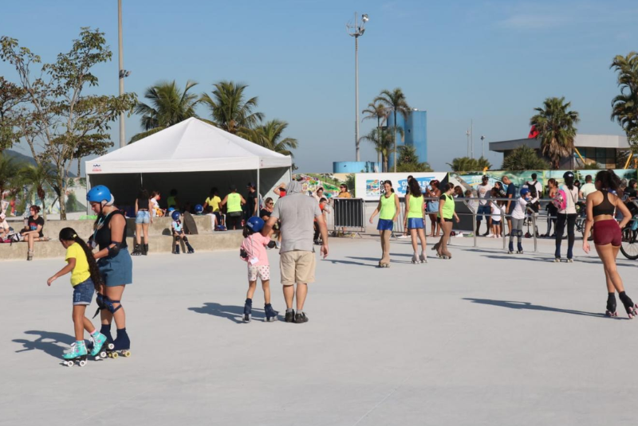
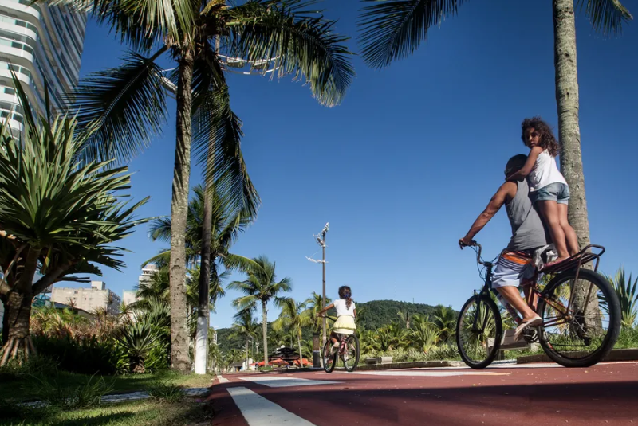
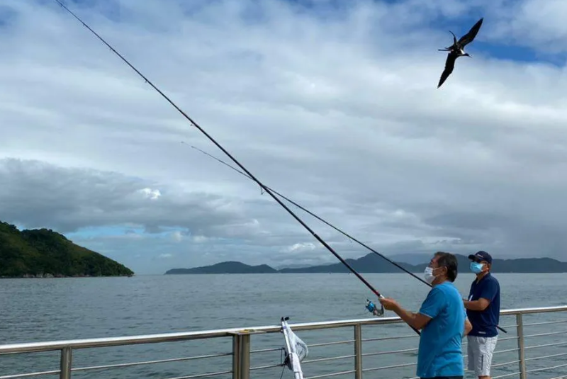
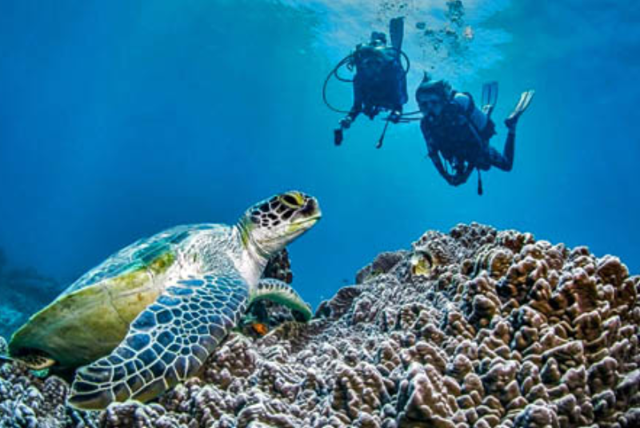
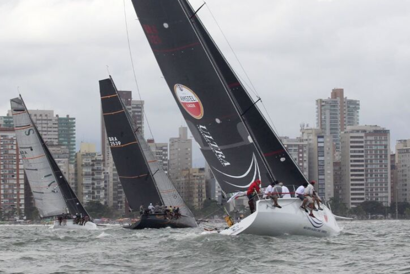
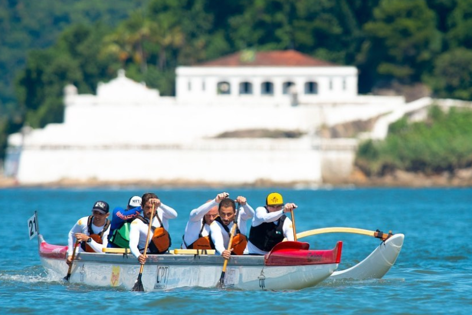

Em Busca de Lazer!
Explore as opções de lazer em Santos, uma cidade rica em atividades à beira-mar. Com uma ciclovia impressionante e uma atmosfera propícia para esportes na praia, Santos convida você a descobrir novas experiências e aproveitar momentos incríveis com amigos e família. Seja bem-vindo à busca pelo lazer perfeito, onde a brisa marítima e a paisagem costeira se tornam o cenário ideal para diversão e relaxamento.

Santos: Descubra as 6 Principais Praias para Desfrutar
Santos abriga seis praias distintas, cada uma oferecendo uma experiência única. Da tranquila Praia do José Menino à movimentada Pompeia, do agitado Gonzaga ao esportivo Boqueirão, do acolhedor Embaré à serena Aparecida. Com variadas opções de lazer, desde caminhadas relaxantes a esportes na areia, Santos proporciona experiências diversificadas para todos os gostos.

José Menino: Entre Quebra-Mar, Natureza e Surf
A Praia de José Menino destaca-se entre as praias santistas devido ao Quebra-Mar, que harmoniza o oceano com a terra, e ao Parque Roberto Mário Santini, proporcionando vistas deslumbrantes do mar, ciclovias e áreas verdes para o lazer à beira-mar. Além disso, a presença da Escola Pública de Surf, localizada na Praça do Surfista, enriquece a experiência, oferecendo oportunidades para a prática de esportes aquáticos e educação sobre o surf. Esse conjunto torna José Menino um destino encantador, unindo beleza natural, atividades recreativas e a promoção do surf como parte integrante da experiência na praia.

Surf em Santos
O surf em Santos é uma experiência emocionante, atraindo surfistas de todas as idades para as ondas da extensa faixa costeira. Destaque na Praia do José Menino, a cidade oferece condições ideais para surfar, com opções desafiadoras e suaves. Escolas de surf proporcionam aulas para todos os níveis, e a possibilidade de aluguel de pranchas torna a prática do esporte ainda mais acessível em Santos.
Aluguel de prancha "Boleria Frei Caneca" - Endereço: Av. Pres. Wilson, 128 - José Menino.
Horário de Funcionamento: Terça à sábado, das 9h às 22h. Domingo, das 14h às 22h. Site oficial

Skatepark Chorão no Quebra-Mar
O Skatepark Chorão, inaugurado em dezembro de 2023, durante o Campeonato Brasileiro de Street Skateboarding, representa um marco significativo para a cultura skatista no Novo Quebra-Mar, em Santos. Com uma área espaçosa de 2.400m², o katepark homenageia Chorão, do Charlie Brown Júnior, unindo música e skate de maneira única. A fusão de elementos artísticos e esportivos não só celebra o legado de Chorão, mas também destaca a intrínseca conexão entre essas formas de expressão cultural.
Endereço: Av. Pres. Wilson, S/N - José Menino.
Horário de Funcionamento: Diariamente, das 8h às 22h. Site oficial

Patinando à Beira-Mar
Explore a experiência única de patinar na agradável pista do Quebra-Mar em Santos. Com um percurso fluido, é o local ideal para patinadores de todos os níveis. Sob o céu azul e à sombra das palmeiras, a pista proporciona diversão e exercício em um cenário costeiro encantador.
Endereço: Av. Pres. Wilson, S/N - José Menino.
Horário de Funcionamento: Diariamente, das 8h às 22h.

Espaço Kids à Beira-Mar
No coração do Quebra-Mar em Santos, o Espaço Kids à Beira-Mar é um local encantador para a diversão das crianças, oferecendo atividades lúdicas e recreativas em um ambiente seguro e acolhedor. Com escorregadores coloridos, o espaço proporciona momentos de alegria e estimula a imaginação, enquanto os pais podem desfrutar de momentos de relaxamento. Uma adição vibrante à comunidade, o Espaço Kids traz leveza à paisagem costeira de Santos.
Endereço: Av. Pres. Wilson, S/N - José Menino.
Horário de Funcionamento: Diariamente, das 8h às 22h. Site oficial

Ciclovia à Beira-Mar
A ciclovia em Santos é uma joia urbana que se estende pela deslumbrante orla marítima, convidando moradores e visitantes para pedalar com vistas panorâmicas do oceano. Santos se destaca pelo compromisso com o ciclismo, oferecendo uma infraestrutura segura para ciclistas de todos os níveis. A ciclovia não apenas serve como via de transporte, mas também como uma experiência envolvente que destaca o equilíbrio entre mobilidade, saúde e apreciação do ambiente marinho.
Aluguel de bicicletas "Ciclotec bicicletas"
Endereço: R. Paraguai, 134 - Gonzaga.
Horário de Funcionamento: Segunda a sexta, das 8h às 18h. Sábado, das 8h às 13h. Site oficial

Santista Running: Vitalidade à Beira do Mar
Correr no calçadão de Santos é uma experiência revitalizante, onde as pistas de ciclismo proporcionam um terreno suave e seguro. A brisa marítima e a vista espetacular tornam cada corrida não apenas um exercício, mas uma experiência rejuvenescedora. Seja você um iniciante ou um atleta experiente, o calçadão de Santos oferece um cenário dinâmico para cada passo da sua jornada de corrida.

Esportes à Beira-Mar: Santos em Movimento
A praia de Santos é um animado cenário esportivo à beira-mar, onde entusiastas se dedicam a diversas atividades, como beach tennis, frescobol, vôlei de praia, futevôlei e futebol informal. As quadras improvisadas são palco de competições acirradas, enquanto a atmosfera vibrante e ensolarada convida amigos a se reunirem para partidas dinâmicas. Santos se destaca como um local não apenas para lazer, mas como um ambiente multifacetado que celebra a vida ativa e a convivência à beira-mar.

Pesca em Santos: Uma Tradição Marítima
Santos, banhada pelo oceano, oferece uma experiência única para os apaixonados pela pesca. Dos movimentados píeres aos recantos tranquilos, a pesca na cidade não é apenas uma prática, mas uma tradição que conecta gerações. Mais do que buscar o peixe perfeito, é uma jornada de contemplação e comunhão com o mar, onde histórias são compartilhadas entre pescadores. Cada dia de pesca em Santos é uma oportunidade de criar memórias duradouras e apreciar a beleza atemporal do mar.

Mergulho na Laje de Santos
Laje de Santos, a 45 km da costa, é o terceiro melhor ponto de mergulho no Brasil. A imponente Laje de Santos, com 550m de comprimento, oferece águas cristalinas e temperatura agradável. Mergulhadores exploram cardumes, arraias-jamanta, tartarugas e golfinhos. O naufrágio da embarcação Moreia, a 23 metros, e o Parcel das Âncoras a 40 metros são atrações emocionantes. O Parque Estadual Marinho da Laje de Santos, pioneiro desde 1993, preserva a biodiversidade costeira, um tesouro natural acima e abaixo das ondas.
Operadora Náutica: Nautilus Mergulho Site da Náutica Site oficial da Prefeitura

Descubra o Prazer do Velejo em Santos
Desvende o fascinante mundo do velejo em Santos, onde o vento guia a navegação e proporciona uma experiência única. Aproveite a oportunidade de aprender a velejar em clubes especializados, explorando a beleza do mar com a orientação de instrutores capacitados. Uma jornada acessível e envolvente para todos os interessados, revelando o prazer de deslizar pelas águas sob a magia das velas.
Clube Náutica: InterSantos Site do Clube

Canoagem em Santos: Uma Experiência Memorável
Desfrute da beleza costeira de Santos ao se aventurar na canoagem. Com águas tranquilas e cenários deslumbrantes, a cidade oferece o ambiente perfeito para explorar suas paisagens exclusivas de canoa. Seja um iniciante ou entusiasta experiente, a canoagem em Santos proporciona uma conexão única com a natureza, combinando exercício físico, serenidade e paisagens encantadoras. Deslize suavemente pelas águas, sinta a brisa marítima e explore de forma singular as costas desta cidade encantadora.
Endereço: Rua Cidade de Santos, 20 - Ponta da Praia. Site oficial

Asa Delta em Santos: Voando sobre o Mar
Santos oferece uma experiência única para os amantes de Asa Delta. Voar sobre o mar proporciona uma sensação indescritível de liberdade e aventura. Praticantes desfrutam de vistas espetaculares, explorando os céus enquanto observam a beleza do litoral. Seja um novato ou entusiasta, a Asa Delta em Santos é uma jornada emocionante pelos céus da cidade. Explore novas alturas e sinta a emoção do voo sobre as águas.
Horário de Funcionamento: Diariamente, das 10h às 18h. Site oficial
Teatro Municipal de Santos: Palco da Emoção
O Teatro Municipal de Santos é um marco cultural na história da cidade. Suas portas se abrem para receber apaixonados pela arte, proporcionando experiências teatrais inesquecíveis. Com uma arquitetura elegante, o teatro é palco de uma variedade de performances, enriquecendo a vida cultural da comunidade. Explore este espaço cativante e mergulhe nas maravilhas do mundo teatral.
Endereço: Centro Cultural Patricia Galvão - Av. Senador Pinheiro Machado, 48 - Vila Matias. Site oficial